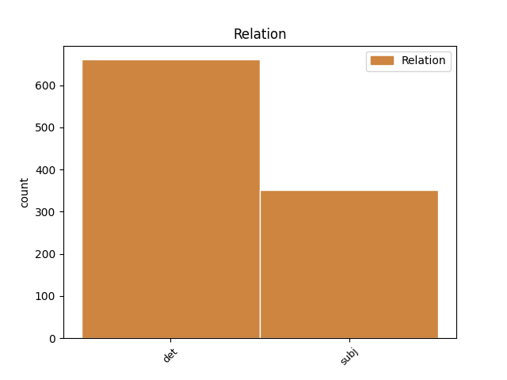
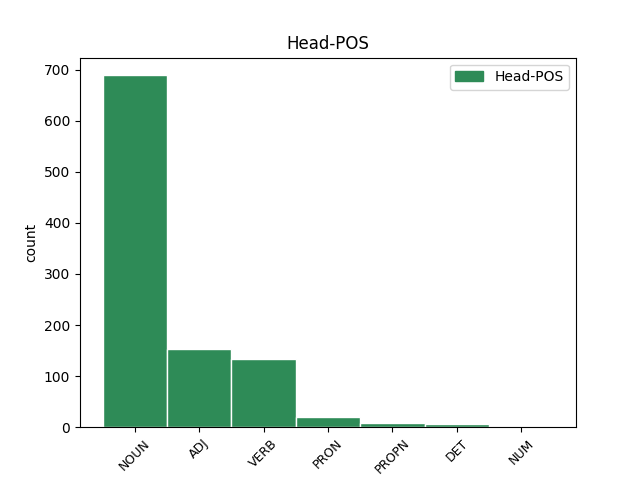
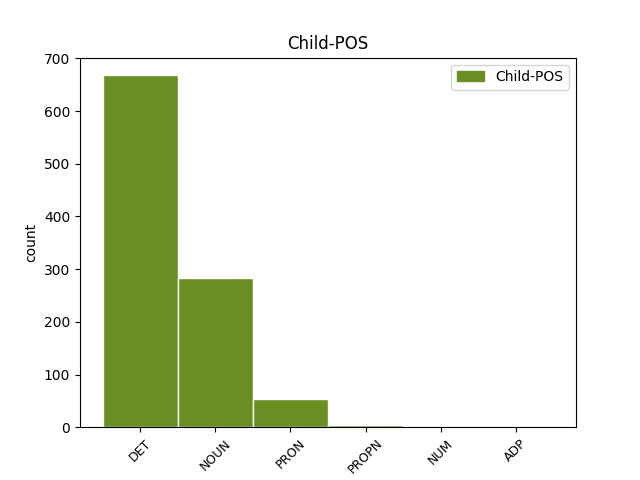

Distribution of features within this leaf



Agreement Rules sorted by frequency.
- When the dependent token is the determiner(det) of the head token, and the head token is NOUN and the dependent token is DET.
1 Ginčai _ _ _ _ 0 _ _ _
2 dėl _ _ _ _ 0 _ _ _
3 šio šis DET įv.vyr.vns.K. Case=Gen|Definite=Ind|Gender=Masc|Number=Sing|PronType=Dem 4 det _ _
4 reglamento reglamentas NOUN dkt.vyr.vns.K. Case=Gen|Gender=Masc|Number=Sing 0 _ _ _
5 taikymo _ _ _ _ 0 _ _ _
6 nagrinėjami _ _ _ _ 0 _ _ _
7 įstatymų _ _ _ _ 0 _ _ _
8 nustatyta _ _ _ _ 0 _ _ _
9 tvarka _ _ _ _ 0 _ _ _
10 . _ _ _ _ 0 _ _ _
1 Šengeno _ _ _ _ 0 _ _ _
2 duomenų _ _ _ _ 0 _ _ _
3 apsaugos _ _ _ _ 0 _ _ _
4 vertinimo _ _ _ _ 0 _ _ _
5 ataskaitoje _ _ _ _ 0 _ _ _
6 pažymėta _ _ _ _ 0 _ _ _
7 , _ _ _ _ 0 _ _ _
8 kad _ _ _ _ 0 _ _ _
9 duomenų _ _ _ _ 0 _ _ _
10 apsauga _ _ _ _ 0 _ _ _
11 Lietuvoje _ _ _ _ 0 _ _ _
12 yra _ _ _ _ 0 _ _ _
13 tinkama _ _ _ _ 0 _ _ _
14 ir _ _ _ _ 0 _ _ _
15 visiškai _ _ _ _ 0 _ _ _
16 atitinka _ _ _ _ 0 _ _ _
17 Šengeno _ _ _ _ 0 _ _ _
18 teisyną _ _ _ _ 0 _ _ _
19 , _ _ _ _ 0 _ _ _
20 išskyrus _ _ _ _ 0 _ _ _
21 tai _ _ _ _ 0 _ _ _
22 , _ _ _ _ 0 _ _ _
23 kad _ _ _ _ 0 _ _ _
24 Inspekcija inspekcija NOUN dkt.mot.vns.V. Case=Nom|Gender=Fem|Number=Sing 33 subj _ _
25 dėl _ _ _ _ 0 _ _ _
26 kasmetinio _ _ _ _ 0 _ _ _
27 jos _ _ _ _ 0 _ _ _
28 vadovo _ _ _ _ 0 _ _ _
29 veiklos _ _ _ _ 0 _ _ _
30 vertinimo _ _ _ _ 0 _ _ _
31 nėra _ _ _ _ 0 _ _ _
32 visiškai _ _ _ _ 0 _ _ _
33 nepriklausoma nepriklausomas ADJ bdv.nelygin.mot.vns.V. Case=Nom|Definite=Ind|Degree=Pos|Gender=Fem|Number=Sing 0 _ _ _
34 . _ _ _ _ 0 _ _ _
1 Programa programa NOUN dkt.mot.vns.V. Case=Nom|Gender=Fem|Number=Sing 4 subj _ _
2 ir _ _ _ _ 0 _ _ _
3 asignavimai _ _ _ _ 0 _ _ _
4 skirti skirti VERB vksm.neveik.būt.vyr.dgs.V. Case=Nom|Gender=Masc|Number=Plur|Polarity=Pos|Tense=Past|Voice=Pass 0 _ _ _
5 jai _ _ _ _ 0 _ _ _
6 įgyvendinti _ _ _ _ 0 _ _ _
7 – _ _ _ _ 0 _ _ _
8 Duomenų _ _ _ _ 0 _ _ _
9 apsaugos _ _ _ _ 0 _ _ _
10 valdymas _ _ _ _ 0 _ _ _
11 ( _ _ _ _ 0 _ _ _
12 1781 _ _ _ _ 0 _ _ _
13 tūkst _ _ _ _ 0 _ _ _
14 . _ _ _ _ 0 _ _ _
15 Lt _ _ _ _ 0 _ _ _
16 ) _ _ _ _ 0 _ _ _
17 . _ _ _ _ 0 _ _ _
1 21 _ _ _ _ 0 _ _ _
2 . _ _ _ _ 0 _ _ _
3 Komiteto _ _ _ _ 0 _ _ _
4 sprendimai _ _ _ _ 0 _ _ _
5 įforminami _ _ _ _ 0 _ _ _
6 posėdžių _ _ _ _ 0 _ _ _
7 protokolais _ _ _ _ 0 _ _ _
8 , _ _ _ _ 0 _ _ _
9 kuriuos _ _ _ _ 0 _ _ _
10 pasirašo _ _ _ _ 0 _ _ _
11 Komiteto _ _ _ _ 0 _ _ _
12 pirmininkas pirmininkas NOUN dkt.vyr.vns.V. Case=Nom|Gender=Masc|Number=Sing 0 _ _ _
13 ( _ _ _ _ 0 _ _ _
14 ar _ _ _ _ 0 _ _ _
15 pavaduotojas pavaduotojas NOUN dkt.vyr.vns.V. Case=Nom|Gender=Masc|Number=Sing 12 subj _ SpaceAfter=No
16 ) _ _ _ _ 0 _ _ _
17 ir _ _ _ _ 0 _ _ _
18 sekretorius _ _ _ _ 0 _ _ _
19 . _ _ _ _ 0 _ _ _
1 Anot _ _ _ _ 0 _ _ _
2 dietologės _ _ _ _ 0 _ _ _
3 , _ _ _ _ 0 _ _ _
4 žuvį _ _ _ _ 0 _ _ _
5 galima _ _ _ _ 0 _ _ _
6 rinktis _ _ _ _ 0 _ _ _
7 ir _ _ _ _ 0 _ _ _
8 pigesnę _ _ _ _ 0 _ _ _
9 – _ _ _ _ 0 _ _ _
10 ji jis PRON įv.mot.vns.V. Case=Nom|Definite=Ind|Gender=Fem|Number=Sing|Person=3|PronType=Prs 13 subj _ _
11 tikrai _ _ _ _ 0 _ _ _
12 nebus _ _ _ _ 0 _ _ _
13 prastesnė prastas ADJ bdv.aukšt.mot.vns.V. Case=Nom|Definite=Ind|Degree=Cmp|Gender=Fem|Number=Sing 0 _ _ _
14 . _ _ _ _ 0 _ _ _
1 Labai _ _ _ _ 0 _ _ _
2 svarbi _ _ _ _ 0 _ _ _
3 bet _ _ _ _ 0 _ _ _
4 kurios _ _ _ _ 0 _ _ _
5 klasifikacijos _ _ _ _ 0 _ _ _
6 nuostata _ _ _ _ 0 _ _ _
7 yra _ _ _ _ 0 _ _ _
8 ta _ _ _ _ 0 _ _ _
9 , _ _ _ _ 0 _ _ _
10 kad _ _ _ _ 0 _ _ _
11 paribio _ _ _ _ 0 _ _ _
12 kategorijos _ _ _ _ 0 _ _ _
13 būtų _ _ _ _ 0 _ _ _
14 lygiai _ _ _ _ 0 _ _ _
15 tokios toks DET sampl.įv.mot.dgs.V. Case=Nom|Definite=Ind|Gender=Fem|Hyph=Yes|Number=Plur|PronType=Dem 17 det _ _
16 pat _ _ _ _ 0 _ _ _
17 svarbios svarbus ADJ bdv.nelygin.mot.dgs.V. Case=Nom|Definite=Ind|Degree=Pos|Gender=Fem|Number=Plur 0 _ _ _
18 kaip _ _ _ _ 0 _ _ _
19 ir _ _ _ _ 0 _ _ _
20 centrinės _ _ _ _ 0 _ _ _
21 kategorijos _ _ _ _ 0 _ _ _
22 . _ _ _ _ 0 _ _ _
1 Mums aš PRON įv.dgs.N. Case=Dat|Definite=Ind|Number=Plur|Person=1|PronType=Prs 0 _ _ _
2 patiems pats DET įv.vyr.dgs.N. Case=Dat|Definite=Ind|Gender=Masc|Number=Plur|PronType=Emp 1 det _ _
3 lietuviškas _ _ _ _ 0 _ _ _
4 maistas _ _ _ _ 0 _ _ _
5 buvo _ _ _ _ 0 _ _ _
6 nusibodęs _ _ _ _ 0 _ _ _
7 . _ _ _ _ 0 _ _ _
1 Pavyzdžiui _ _ _ _ 0 _ _ _
2 , _ _ _ _ 0 _ _ _
3 autorė _ _ _ _ 0 _ _ _
4 pastebi _ _ _ _ 0 _ _ _
5 , _ _ _ _ 0 _ _ _
6 kad _ _ _ _ 0 _ _ _
7 Vakaruose _ _ _ _ 0 _ _ _
8 ir _ _ _ _ 0 _ _ _
9 Rytų _ _ _ _ 0 _ _ _
10 Europoje _ _ _ _ 0 _ _ _
11 skirtingai _ _ _ _ 0 _ _ _
12 suvokiamas _ _ _ _ 0 _ _ _
13 subjektyvumas _ _ _ _ 0 _ _ _
14 : _ _ _ _ 0 _ _ _
15 „ _ _ _ _ 0 _ _ _
16 Vakaruose _ _ _ _ 0 _ _ _
17 jis jis PRON įv.vyr.vns.V. Case=Nom|Definite=Ind|Gender=Masc|Number=Sing|Person=3|PronType=Prs 18 subj _ _
18 suvokiamas suvokti VERB vksm.dlv.neveik.es.vyr.vns.V. Case=Nom|Definite=Ind|Gender=Masc|Number=Sing|Polarity=Pos|Tense=Pres|VerbForm=Part|Voice=Pass 0 _ _ _
19 kaip _ _ _ _ 0 _ _ _
20 vertinimas _ _ _ _ 0 _ _ _
21 , _ _ _ _ 0 _ _ _
22 komentavimas _ _ _ _ 0 _ _ _
23 , _ _ _ _ 0 _ _ _
24 o _ _ _ _ 0 _ _ _
25 Rytuose _ _ _ _ 0 _ _ _
26 – _ _ _ _ 0 _ _ _
27 kaip _ _ _ _ 0 _ _ _
28 informacijos _ _ _ _ 0 _ _ _
29 beletrizacija _ _ _ _ 0 _ _ _
30 arba _ _ _ _ 0 _ _ _
31 publicistika _ _ _ _ 0 _ _ _
32 , _ _ _ _ 0 _ _ _
33 taigi _ _ _ _ 0 _ _ _
34 čia _ _ _ _ 0 _ _ _
35 subjektyvumas _ _ _ _ 0 _ _ _
36 tapatinamas _ _ _ _ 0 _ _ _
37 ne _ _ _ _ 0 _ _ _
38 tiek _ _ _ _ 0 _ _ _
39 su _ _ _ _ 0 _ _ _
40 asmens _ _ _ _ 0 _ _ _
41 , _ _ _ _ 0 _ _ _
42 kiek _ _ _ _ 0 _ _ _
43 su _ _ _ _ 0 _ _ _
44 ištiso _ _ _ _ 0 _ _ _
45 publicistikos _ _ _ _ 0 _ _ _
46 funkcinio _ _ _ _ 0 _ _ _
47 stiliaus _ _ _ _ 0 _ _ _
48 samprata _ _ _ _ 0 _ _ _
49 “ _ _ _ _ 0 _ _ _
50 ( _ _ _ _ 0 _ _ _
51 p _ _ _ _ 0 _ _ _
52 . _ _ _ _ 0 _ _ _
53 71 _ _ _ _ 0 _ _ _
54 ) _ _ _ _ 0 _ _ _
55 . _ _ _ _ 0 _ _ _
1 12.4 _ _ _ _ 0 _ _ _
2 . _ _ _ _ 0 _ _ _
3 yra _ _ _ _ 0 _ _ _
4 įsiteisėjusi _ _ _ _ 0 _ _ _
5 teismo _ _ _ _ 0 _ _ _
6 nutartis _ _ _ _ 0 _ _ _
7 likviduoti _ _ _ _ 0 _ _ _
8 pašto _ _ _ _ 0 _ _ _
9 paslaugos _ _ _ _ 0 _ _ _
10 teikėją _ _ _ _ 0 _ _ _
11 , _ _ _ _ 0 _ _ _
12 kai _ _ _ _ 0 _ _ _
13 jis jis PRON įv.vyr.vns.V. Case=Nom|Definite=Ind|Gender=Masc|Number=Sing|Person=3|PronType=Prs 16 subj _ _
14 yra _ _ _ _ 0 _ _ _
15 juridinis _ _ _ _ 0 _ _ _
16 asmuo asmuo NOUN dkt.vyr.vns.V. Case=Nom|Gender=Masc|Number=Sing 0 _ _ _
17 ar _ _ _ _ 0 _ _ _
18 kita _ _ _ _ 0 _ _ _
19 organizacija _ _ _ _ 0 _ _ _
20 , _ _ _ _ 0 _ _ _
21 dėl _ _ _ _ 0 _ _ _
22 pašto _ _ _ _ 0 _ _ _
23 paslaugos _ _ _ _ 0 _ _ _
24 teikėjo _ _ _ _ 0 _ _ _
25 bankroto _ _ _ _ 0 _ _ _
26 ; _ _ _ _ 0 _ _ _
1 Atidariau _ _ _ _ 0 _ _ _
2 duris _ _ _ _ 0 _ _ _
3 , _ _ _ _ 0 _ _ _
4 o _ _ _ _ 0 _ _ _
5 ten _ _ _ _ 0 _ _ _
6 stovi _ _ _ _ 0 _ _ _
7 jis _ _ _ _ 0 _ _ _
8 , _ _ _ _ 0 _ _ _
9 visas visas DET įv.vyr.vns.V. Case=Nom|Definite=Ind|Gender=Masc|Number=Sing|PronType=Tot 10 det _ _
10 pasirengęs pasirengti VERB vksm.dlv.sngr.veik.būt-k.vyr.vns.V. Aspect=Perf|Case=Nom|Definite=Ind|Gender=Masc|Number=Sing|Polarity=Pos|Reflex=Yes|Tense=Past|VerbForm=Part|Voice=Act 0 _ _ _
11 apeliuoti _ _ _ _ 0 _ _ _
12 į _ _ _ _ 0 _ _ _
13 mano _ _ _ _ 0 _ _ _
14 žmogiškumo _ _ _ _ 0 _ _ _
15 esmę _ _ _ _ 0 _ _ _
16 , _ _ _ _ 0 _ _ _
17 kurią _ _ _ _ 0 _ _ _
18 kaip _ _ _ _ 0 _ _ _
19 tik _ _ _ _ 0 _ _ _
20 tuo _ _ _ _ 0 _ _ _
21 metu _ _ _ _ 0 _ _ _
22 ir _ _ _ _ 0 _ _ _
23 gaminau _ _ _ _ 0 _ _ _
24 . _ _ _ _ 0 _ _ _
1 Suorganizuota _ _ _ _ 0 _ _ _
2 dvigubai _ _ _ _ 0 _ _ _
3 daugiau _ _ _ _ 0 _ _ _
4 nei _ _ _ _ 0 _ _ _
5 2005 _ _ _ _ 0 _ _ _
6 m _ _ _ _ 0 _ _ _
7 . _ _ _ _ 0 _ _ _
8 seminarų _ _ _ _ 0 _ _ _
9 aktualiais _ _ _ _ 0 _ _ _
10 asmens _ _ _ _ 0 _ _ _
11 duomenų _ _ _ _ 0 _ _ _
12 apsaugos _ _ _ _ 0 _ _ _
13 klausimais _ _ _ _ 0 _ _ _
14 duomenų _ _ _ _ 0 _ _ _
15 valdytojams _ _ _ _ 0 _ _ _
16 ir _ _ _ _ 0 _ _ _
17 tvarkytojams _ _ _ _ 0 _ _ _
18 visoje visas DET įv.mot.vns.Vt. Case=Loc|Definite=Ind|Gender=Fem|Number=Sing|PronType=Tot 19 det _ _
19 Lietuvoje Lietuva PROPN dkt.tikr.mot.vns.Vt. Case=Loc|Gender=Fem|Number=Sing 0 _ _ _
20 ( _ _ _ _ 0 _ _ _
21 iš _ _ _ _ 0 _ _ _
22 viso _ _ _ _ 0 _ _ _
23 16 _ _ _ _ 0 _ _ _
24 ) _ _ _ _ 0 _ _ _
25 . _ _ _ _ 0 _ _ _
1 Tarsi _ _ _ _ 0 _ _ _
2 mano _ _ _ _ 0 _ _ _
3 galvoje _ _ _ _ 0 _ _ _
4 tėvo _ _ _ _ 0 _ _ _
5 ir _ _ _ _ 0 _ _ _
6 vaiko _ _ _ _ 0 _ _ _
7 sąvokos _ _ _ _ 0 _ _ _
8 būtų _ _ _ _ 0 _ _ _
9 susikeitusios _ _ _ _ 0 _ _ _
10 vietomis _ _ _ _ 0 _ _ _
11 , _ _ _ _ 0 _ _ _
12 bet _ _ _ _ 0 _ _ _
13 atstumas atstumas NOUN dkt.vyr.vns.V. Case=Nom|Gender=Masc|Number=Sing 17 subj _ _
14 tarp _ _ _ _ 0 _ _ _
15 jų _ _ _ _ 0 _ _ _
16 išlikęs _ _ _ _ 0 _ _ _
17 tas tas DET sampl.įv.vyr.vns.V. Case=Nom|Definite=Ind|Gender=Masc|Hyph=Yes|Number=Sing|PronType=Dem 0 _ _ _
18 pats _ _ _ _ 0 _ _ _
19 , _ _ _ _ 0 _ _ _
20 kaip _ _ _ _ 0 _ _ _
21 ir _ _ _ _ 0 _ _ _
22 anksčiau _ _ _ _ 0 _ _ _
23 , _ _ _ _ 0 _ _ _
24 kai _ _ _ _ 0 _ _ _
25 dar _ _ _ _ 0 _ _ _
26 pats _ _ _ _ 0 _ _ _
27 buvau _ _ _ _ 0 _ _ _
28 vaikas _ _ _ _ 0 _ _ _
29 . _ _ _ _ 0 _ _ _
1 8 _ _ _ _ 0 _ _ _
2 . _ _ _ _ 0 _ _ _
3 Savarankiška _ _ _ _ 0 _ _ _
4 įmonė _ _ _ _ 0 _ _ _
5 – _ _ _ _ 0 _ _ _
6 įmonė _ _ _ _ 0 _ _ _
7 , _ _ _ _ 0 _ _ _
8 kuri kuris DET įv.mot.vns.V. Case=Nom|Definite=Ind|Gender=Fem|Number=Sing|PronType=Int 13 subj _ _
9 pagal _ _ _ _ 0 _ _ _
10 šį _ _ _ _ 0 _ _ _
11 įstatymą _ _ _ _ 0 _ _ _
12 nėra _ _ _ _ 0 _ _ _
13 priskiriama priskirti VERB vksm.dlv.neveik.es.mot.vns.V. Case=Nom|Definite=Ind|Gender=Fem|Number=Sing|Polarity=Pos|Tense=Pres|VerbForm=Part|Voice=Pass 0 _ _ _
14 partnerinei _ _ _ _ 0 _ _ _
15 arba _ _ _ _ 0 _ _ _
16 susijusiai _ _ _ _ 0 _ _ _
17 įmonei _ _ _ _ 0 _ _ _
18 . _ _ _ _ 0 _ _ _
1 Ryškiausi _ _ _ _ 0 _ _ _
2 šios _ _ _ _ 0 _ _ _
3 krypties _ _ _ _ 0 _ _ _
4 atstovai atstovas NOUN dkt.vyr.dgs.V. Case=Nom|Gender=Masc|Number=Plur 6 subj _ _
5 Raoulis _ _ _ _ 0 _ _ _
6 Kurvitzas Kurvitzas PROPN dkt.tikr.vyr.vns.V. Case=Nom|Gender=Masc|Number=Sing 0 _ _ _
7 , _ _ _ _ 0 _ _ _
8 Raulis _ _ _ _ 0 _ _ _
9 Kelleris _ _ _ _ 0 _ _ _
10 , _ _ _ _ 0 _ _ _
11 Vaclovas _ _ _ _ 0 _ _ _
12 Nevčesauskas _ _ _ _ 0 _ _ _
13 , _ _ _ _ 0 _ _ _
14 Mindaugas _ _ _ _ 0 _ _ _
15 Gapševičius _ _ _ _ 0 _ _ _
16 , _ _ _ _ 0 _ _ _
17 Martinas _ _ _ _ 0 _ _ _
18 Ratnikas _ _ _ _ 0 _ _ _
19 , _ _ _ _ 0 _ _ _
20 Pēteris _ _ _ _ 0 _ _ _
21 Ķimelis _ _ _ _ 0 _ _ _
22 . _ _ _ _ 0 _ _ _
1 Ankstesnėms _ _ _ _ 0 _ _ _
2 klasifikacijoms _ _ _ _ 0 _ _ _
3 būdinga _ _ _ _ 0 _ _ _
4 per _ _ _ _ 0 _ _ _
5 daug _ _ _ _ 0 _ _ _
6 supaprastinta _ _ _ _ 0 _ _ _
7 schema _ _ _ _ 0 _ _ _
8 , _ _ _ _ 0 _ _ _
9 kuri kuris DET įv.mot.vns.V. Case=Nom|Definite=Ind|Gender=Fem|Number=Sing|PronType=Int 11 subj _ _
10 yra _ _ _ _ 0 _ _ _
11 uždara uždaras ADJ bdv.nelygin.mot.vns.V. Case=Nom|Definite=Ind|Degree=Pos|Gender=Fem|Number=Sing 0 _ _ _
12 ir _ _ _ _ 0 _ _ _
13 todėl _ _ _ _ 0 _ _ _
14 nelanksti _ _ _ _ 0 _ _ _
15 . _ _ _ _ 0 _ _ _
1 Kaip _ _ _ _ 0 _ _ _
2 Vilniuje _ _ _ _ 0 _ _ _
3 parašytoje _ _ _ _ 0 _ _ _
4 istorijoje _ _ _ _ 0 _ _ _
5 Kaunui _ _ _ _ 0 _ _ _
6 labai _ _ _ _ 0 _ _ _
7 „ _ _ _ _ 0 _ _ _
8 pasisekė _ _ _ _ 0 _ _ _
9 “ _ _ _ _ 0 _ _ _
10 - _ _ _ _ 0 _ _ _
11 keturiose _ _ _ _ 0 _ _ _
12 ar _ _ _ _ 0 _ _ _
13 penkiose _ _ _ _ 0 _ _ _
14 vietose _ _ _ _ 0 _ _ _
15 paminėti _ _ _ _ 0 _ _ _
16 radikalai _ _ _ _ 0 _ _ _
17 iš _ _ _ _ 0 _ _ _
18 Kauno _ _ _ _ 0 _ _ _
19 , _ _ _ _ 0 _ _ _
20 nors _ _ _ _ 0 _ _ _
21 kas _ _ _ _ 0 _ _ _
22 jie jis PRON įv.vyr.dgs.V. Case=Nom|Definite=Ind|Gender=Masc|Number=Plur|Person=3|PronType=Prs 23 subj _ _
23 tokie toks DET įv.vyr.dgs.V. Case=Nom|Definite=Ind|Gender=Masc|Number=Plur|PronType=Dem 0 _ _ _
24 ir _ _ _ _ 0 _ _ _
25 kodėl _ _ _ _ 0 _ _ _
26 taip _ _ _ _ 0 _ _ _
27 elgėsi _ _ _ _ 0 _ _ _
28 , _ _ _ _ 0 _ _ _
29 skaitytojui _ _ _ _ 0 _ _ _
30 belieka _ _ _ _ 0 _ _ _
31 tik _ _ _ _ 0 _ _ _
32 spėlioti _ _ _ _ 0 _ _ _
33 . _ _ _ _ 0 _ _ _
1 Lietuvos _ _ _ _ 0 _ _ _
2 socialinių _ _ _ _ 0 _ _ _
3 tyrimų _ _ _ _ 0 _ _ _
4 centro _ _ _ _ 0 _ _ _
5 , _ _ _ _ 0 _ _ _
6 Vilniaus _ _ _ _ 0 _ _ _
7 universiteto _ _ _ _ 0 _ _ _
8 ir _ _ _ _ 0 _ _ _
9 Mykolo _ _ _ _ 0 _ _ _
10 Romerio _ _ _ _ 0 _ _ _
11 universiteto _ _ _ _ 0 _ _ _
12 tyrėjai tyrėjas NOUN dkt.vyr.dgs.V. Case=Nom|Gender=Masc|Number=Plur 0 _ _ _
13 Jolanta _ _ _ _ 0 _ _ _
14 Aidukaitė Aidukaitė PROPN dkt.tikr.mot.vns.V. Case=Nom|Gender=Fem|Number=Sing 12 subj _ SpaceAfter=No
15 , _ _ _ _ 0 _ _ _
16 Natalija _ _ _ _ 0 _ _ _
17 Bogdanova _ _ _ _ 0 _ _ _
18 ir _ _ _ _ 0 _ _ _
19 Arvydas _ _ _ _ 0 _ _ _
20 Guogis _ _ _ _ 0 _ _ _
21 šių _ _ _ _ 0 _ _ _
22 metų _ _ _ _ 0 _ _ _
23 vasarą _ _ _ _ 0 _ _ _
24 išleido _ _ _ _ 0 _ _ _
25 monografiją _ _ _ _ 0 _ _ _
26 „ _ _ _ _ 0 _ _ _
27 Gerovės _ _ _ _ 0 _ _ _
28 valstybės _ _ _ _ 0 _ _ _
29 kūrimas _ _ _ _ 0 _ _ _
30 Lietuvoje _ _ _ _ 0 _ _ _
31 : _ _ _ _ 0 _ _ _
32 mitas _ _ _ _ 0 _ _ _
33 ar _ _ _ _ 0 _ _ _
34 realybė _ _ _ _ 0 _ _ _
35 ? _ _ _ _ 0 _ _ _
36 “ _ _ _ _ 0 _ _ _
1 Gal _ _ _ _ 0 _ _ _
2 dėl _ _ _ _ 0 _ _ _
3 rinkos _ _ _ _ 0 _ _ _
4 konjunktūros _ _ _ _ 0 _ _ _
5 sumetimų _ _ _ _ 0 _ _ _
6 , _ _ _ _ 0 _ _ _
7 o _ _ _ _ 0 _ _ _
8 gal _ _ _ _ 0 _ _ _
9 siekiant _ _ _ _ 0 _ _ _
10 gauti _ _ _ _ 0 _ _ _
11 papildomą _ _ _ _ 0 _ _ _
12 finansavimą _ _ _ _ 0 _ _ _
13 12-ojo _ _ _ _ 0 _ _ _
14 tomo _ _ _ _ 0 _ _ _
15 I _ _ _ _ 0 _ _ _
16 dalies _ _ _ _ 0 _ _ _
17 pavadinimas _ _ _ _ 0 _ _ _
18 siejamas _ _ _ _ 0 _ _ _
19 su _ _ _ _ 0 _ _ _
20 Sąjūdžiu _ _ _ _ 0 _ _ _
21 , _ _ _ _ 0 _ _ _
22 nors _ _ _ _ 0 _ _ _
23 iš _ _ _ _ 0 _ _ _
24 esmės _ _ _ _ 0 _ _ _
25 čia _ _ _ _ 0 _ _ _
26 aprašomas _ _ _ _ 0 _ _ _
27 1987 _ _ _ _ 0 _ _ _
28 - _ _ _ _ 0 _ _ _
29 1990 _ _ _ _ 0 _ _ _
30 metų _ _ _ _ 0 _ _ _
31 LSSR _ _ _ _ 0 _ _ _
32 politinis _ _ _ _ 0 _ _ _
33 gyvenimas _ _ _ _ 0 _ _ _
34 , _ _ _ _ 0 _ _ _
35 kur _ _ _ _ 0 _ _ _
36 Sąjūdis sąjūdis NOUN dkt.vyr.vns.V. Case=Nom|Gender=Masc|Number=Sing 38 subj _ _
37 tik _ _ _ _ 0 _ _ _
38 vienas vienas PRON įv.vyr.vns.V. Case=Nom|Definite=Ind|Gender=Masc|Number=Sing|PronType=Ind 0 _ _ _
39 iš _ _ _ _ 0 _ _ _
40 kelių _ _ _ _ 0 _ _ _
41 pagrindinių _ _ _ _ 0 _ _ _
42 veikėjų _ _ _ _ 0 _ _ _
43 . _ _ _ _ 0 _ _ _
1 Kuo _ _ _ _ 0 _ _ _
2 žymi žymus ADJ bdv.nelygin.mot.vns.V. Case=Nom|Definite=Ind|Degree=Pos|Gender=Fem|Number=Sing 0 _ _ _
3 balandžio _ _ _ _ 0 _ _ _
4 15-oji 15-as NUM sktv.mišr.kelint.įvardž.mot.vns.V. Case=Nom|Definite=Def|Gender=Fem|Number=Sing|NumForm=Combi|NumType=Ord 2 subj _ _
1 Mano _ _ _ _ 0 _ _ _
2 temperamentas _ _ _ _ 0 _ _ _
3 ne _ _ _ _ 0 _ _ _
4 iš iš ADP prl.K. AdpType=Prep|Case=Gen 5 subj _ _
5 lėtųjų lėtas ADJ bdv.nelygin.įvardž.vyr.dgs.K. Case=Gen|Definite=Def|Degree=Pos|Gender=Masc|Number=Plur 0 _ _ _
6 , _ _ _ _ 0 _ _ _
7 o _ _ _ _ 0 _ _ _
8 verslas _ _ _ _ 0 _ _ _
9 choleriško _ _ _ _ 0 _ _ _
10 būdo _ _ _ _ 0 _ _ _
11 reikalauja _ _ _ _ 0 _ _ _
12 ir _ _ _ _ 0 _ _ _
13 jį _ _ _ _ 0 _ _ _
14 dar _ _ _ _ 0 _ _ _
15 sustiprina _ _ _ _ 0 _ _ _
16 , _ _ _ _ 0 _ _ _
17 lietuviškas _ _ _ _ 0 _ _ _
18 kapitalizmas _ _ _ _ 0 _ _ _
19 tai _ _ _ _ 0 _ _ _
20 tikrai _ _ _ _ 0 _ _ _
21 . _ _ _ _ 0 _ _ _
1 Kasdien _ _ _ _ 0 _ _ _
2 jie jis PRON įv.vyr.dgs.V. Case=Nom|Definite=Ind|Gender=Masc|Number=Plur|Person=3|PronType=Prs 4 subj _ _
3 vis _ _ _ _ 0 _ _ _
4 kiti kitas PRON įv.vyr.dgs.V. Case=Nom|Definite=Ind|Gender=Masc|Number=Plur|PronType=Ind 0 _ _ _
5 , _ _ _ _ 0 _ _ _
6 tu _ _ _ _ 0 _ _ _
7 niekada _ _ _ _ 0 _ _ _
8 jų _ _ _ _ 0 _ _ _
9 neišmoksi _ _ _ _ 0 _ _ _
10 . _ _ _ _ 0 _ _ _
1 Stovime _ _ _ _ 0 _ _ _
2 su _ _ _ _ 0 _ _ _
3 sūnumi _ _ _ _ 0 _ _ _
4 kino _ _ _ _ 0 _ _ _
5 teatro _ _ _ _ 0 _ _ _
6 tualete _ _ _ _ 0 _ _ _
7 , _ _ _ _ 0 _ _ _
8 abu abu NUM sktv.raid.kiek.vyr.V. Case=Nom|Gender=Masc|NumForm=Word|NumType=Card 9 subj _ _
9 išsitraukę išsitraukti VERB vksm.dlv.sngr.veik.būt-k.vyr.dgs.V. Aspect=Perf|Case=Nom|Definite=Ind|Gender=Masc|Number=Plur|Polarity=Pos|Reflex=Yes|Tense=Past|VerbForm=Part|Voice=Act 0 _ _ _
10 savo _ _ _ _ 0 _ _ _
11 virkšteles _ _ _ _ 0 _ _ _
12 , _ _ _ _ 0 _ _ _
13 tuštiname _ _ _ _ 0 _ _ _
14 šlapimo _ _ _ _ 0 _ _ _
15 pūsles _ _ _ _ 0 _ _ _
16 , _ _ _ _ 0 _ _ _
17 spoksodami _ _ _ _ 0 _ _ _
18 priešais _ _ _ _ 0 _ _ _
19 save _ _ _ _ 0 _ _ _
20 į _ _ _ _ 0 _ _ _
21 sieną _ _ _ _ 0 _ _ _
22 , _ _ _ _ 0 _ _ _
23 mudu _ _ _ _ 0 _ _ _
24 skiria _ _ _ _ 0 _ _ _
25 simbolinė _ _ _ _ 0 _ _ _
26 plastmasinė _ _ _ _ 0 _ _ _
27 pertvara _ _ _ _ 0 _ _ _
28 , _ _ _ _ 0 _ _ _
29 bet _ _ _ _ 0 _ _ _
30 tai _ _ _ _ 0 _ _ _
31 , _ _ _ _ 0 _ _ _
32 kas _ _ _ _ 0 _ _ _
33 mus _ _ _ _ 0 _ _ _
34 sieja _ _ _ _ 0 _ _ _
35 , _ _ _ _ 0 _ _ _
36 yra _ _ _ _ 0 _ _ _
37 kur _ _ _ _ 0 _ _ _
38 kas _ _ _ _ 0 _ _ _
39 svarbiau _ _ _ _ 0 _ _ _
40 , _ _ _ _ 0 _ _ _
41 nes _ _ _ _ 0 _ _ _
42 tai _ _ _ _ 0 _ _ _
43 ir _ _ _ _ 0 _ _ _
44 yra _ _ _ _ 0 _ _ _
45 tėvo _ _ _ _ 0 _ _ _
46 ir _ _ _ _ 0 _ _ _
47 sūnaus _ _ _ _ 0 _ _ _
48 santykiai _ _ _ _ 0 _ _ _
49 , _ _ _ _ 0 _ _ _
50 drauge _ _ _ _ 0 _ _ _
51 atliekami _ _ _ _ 0 _ _ _
52 tikri _ _ _ _ 0 _ _ _
53 vyriški _ _ _ _ 0 _ _ _
54 gestai _ _ _ _ 0 _ _ _
55 ir _ _ _ _ 0 _ _ _
56 veiksmai _ _ _ _ 0 _ _ _
57 , _ _ _ _ 0 _ _ _
58 jaučiuosi _ _ _ _ 0 _ _ _
59 absoliutus _ _ _ _ 0 _ _ _
60 tėvas _ _ _ _ 0 _ _ _
61 , _ _ _ _ 0 _ _ _
62 ir _ _ _ _ 0 _ _ _
63 tam _ _ _ _ 0 _ _ _
64 , _ _ _ _ 0 _ _ _
65 kad _ _ _ _ 0 _ _ _
66 šis _ _ _ _ 0 _ _ _
67 jausmas _ _ _ _ 0 _ _ _
68 atsirastų _ _ _ _ 0 _ _ _
69 , _ _ _ _ 0 _ _ _
70 nereikia _ _ _ _ 0 _ _ _
71 nieko _ _ _ _ 0 _ _ _
72 , _ _ _ _ 0 _ _ _
73 tiktai _ _ _ _ 0 _ _ _
74 būti _ _ _ _ 0 _ _ _
75 šalia _ _ _ _ 0 _ _ _
76 savo _ _ _ _ 0 _ _ _
77 vaiko _ _ _ _ 0 _ _ _
78 . _ _ _ _ 0 _ _ _
1 Analogiškus _ _ _ _ 0 _ _ _
2 žingsnius _ _ _ _ 0 _ _ _
3 šįmet _ _ _ _ 0 _ _ _
4 gali _ _ _ _ 0 _ _ _
5 žengti _ _ _ _ 0 _ _ _
6 Serbija Serbija PROPN dkt.tikr.mot.vns.V. Case=Nom|Gender=Fem|Number=Sing 0 _ _ _
7 bei _ _ _ _ 0 _ _ _
8 Bosnija Bosnija PROPN dkt.tikr.mot.vns.V. Case=Nom|Gender=Fem|Number=Sing 6 subj _ _
9 ir _ _ _ _ 0 _ _ _
10 Hercegovina _ _ _ _ 0 _ _ _
11 . _ _ _ _ 0 _ _ _
Disagree Examples:
1 „ _ _ _ _ 0 _ _ _
2 Negali _ _ _ _ 0 _ _ _
3 vieno _ _ _ _ 0 _ _ _
4 instituto _ _ _ _ 0 _ _ _
5 rektorius _ _ _ _ 0 _ _ _
6 uždirbti _ _ _ _ 0 _ _ _
7 30 _ _ _ _ 0 _ _ _
8 tūkstančių _ _ _ _ 0 _ _ _
9 , _ _ _ _ 0 _ _ _
10 kai _ _ _ _ 0 _ _ _
11 tuo _ _ _ _ 0 _ _ _
12 tarpu _ _ _ _ 0 _ _ _
13 mokslinis _ _ _ _ 0 _ _ _
14 darbuotojas darbuotojas NOUN dkt.vyr.vns.V. Case=Nom|Gender=Masc|Number=Sing 16 subj _ _
15 vos _ _ _ _ 0 _ _ _
16 tūkstantį tūkstantis NUM sktv.raid.kiek.vyr.vns.G. Case=Acc|Gender=Masc|Number=Sing|NumForm=Word|NumType=Card 0 _ _ _
17 . _ _ _ _ 0 _ _ _
1 Negana _ _ _ _ 0 _ _ _
2 to _ _ _ _ 0 _ _ _
3 , _ _ _ _ 0 _ _ _
4 pasirodo _ _ _ _ 0 _ _ _
5 , _ _ _ _ 0 _ _ _
6 kad _ _ _ _ 0 _ _ _
7 1990 _ _ _ _ 0 _ _ _
8 vasarą _ _ _ _ 0 _ _ _
9 Sąjūdis _ _ _ _ 0 _ _ _
10 „ _ _ _ _ 0 _ _ _
11 buvo _ _ _ _ 0 _ _ _
12 jau _ _ _ _ 0 _ _ _
13 atlikęs _ _ _ _ 0 _ _ _
14 savo _ _ _ _ 0 _ _ _
15 uždavinį uždavinys NOUN dkt.vyr.vns.G. Case=Acc|Gender=Masc|Number=Sing 17 subj _ _
16 – _ _ _ _ 0 _ _ _
17 informavęs informuoti VERB vksm.dlv.veik.būt-k.vyr.vns.V. Aspect=Perf|Case=Nom|Definite=Ind|Gender=Masc|Number=Sing|Polarity=Pos|Tense=Past|VerbForm=Part|Voice=Act 0 _ _ _
18 Sąjungą _ _ _ _ 0 _ _ _
19 apie _ _ _ _ 0 _ _ _
20 Lietuvos _ _ _ _ 0 _ _ _
21 teises _ _ _ _ 0 _ _ _
22 ir _ _ _ _ 0 _ _ _
23 ties _ _ _ _ 0 _ _ _
24 tuo _ _ _ _ 0 _ _ _
25 tarsi _ _ _ _ 0 _ _ _
26 sustojęs _ _ _ _ 0 _ _ _
27 “ _ _ _ _ 0 _ _ _
28 . _ _ _ _ 0 _ _ _
1 Kaip _ _ _ _ 0 _ _ _
2 Vilniuje _ _ _ _ 0 _ _ _
3 parašytoje _ _ _ _ 0 _ _ _
4 istorijoje _ _ _ _ 0 _ _ _
5 Kaunui Kaunas PROPN dkt.tikr.vyr.vns.N. Case=Dat|Gender=Masc|Number=Sing 15 subj _ _
6 labai _ _ _ _ 0 _ _ _
7 „ _ _ _ _ 0 _ _ _
8 pasisekė _ _ _ _ 0 _ _ _
9 “ _ _ _ _ 0 _ _ _
10 - _ _ _ _ 0 _ _ _
11 keturiose _ _ _ _ 0 _ _ _
12 ar _ _ _ _ 0 _ _ _
13 penkiose _ _ _ _ 0 _ _ _
14 vietose _ _ _ _ 0 _ _ _
15 paminėti paminėti VERB vksm.dlv.neveik.būt.vyr.dgs.V. Case=Nom|Definite=Ind|Gender=Masc|Number=Plur|Polarity=Pos|Tense=Past|VerbForm=Part|Voice=Pass 0 _ _ _
16 radikalai _ _ _ _ 0 _ _ _
17 iš _ _ _ _ 0 _ _ _
18 Kauno _ _ _ _ 0 _ _ _
19 , _ _ _ _ 0 _ _ _
20 nors _ _ _ _ 0 _ _ _
21 kas _ _ _ _ 0 _ _ _
22 jie _ _ _ _ 0 _ _ _
23 tokie _ _ _ _ 0 _ _ _
24 ir _ _ _ _ 0 _ _ _
25 kodėl _ _ _ _ 0 _ _ _
26 taip _ _ _ _ 0 _ _ _
27 elgėsi _ _ _ _ 0 _ _ _
28 , _ _ _ _ 0 _ _ _
29 skaitytojui _ _ _ _ 0 _ _ _
30 belieka _ _ _ _ 0 _ _ _
31 tik _ _ _ _ 0 _ _ _
32 spėlioti _ _ _ _ 0 _ _ _
33 . _ _ _ _ 0 _ _ _
1 Šiuolaikinės _ _ _ _ 0 _ _ _
2 lietuviškosios _ _ _ _ 0 _ _ _
3 emigracijos _ _ _ _ 0 _ _ _
4 mastai _ _ _ _ 0 _ _ _
5 kelia _ _ _ _ 0 _ _ _
6 valstybės _ _ _ _ 0 _ _ _
7 ir _ _ _ _ 0 _ _ _
8 daugelio _ _ _ _ 0 _ _ _
9 viešosios _ _ _ _ 0 _ _ _
10 politikos _ _ _ _ 0 _ _ _
11 praktikų _ _ _ _ 0 _ _ _
12 susirūpinimą _ _ _ _ 0 _ _ _
13 , _ _ _ _ 0 _ _ _
14 todėl _ _ _ _ 0 _ _ _
15 neatsitiktinai _ _ _ _ 0 _ _ _
16 pats _ _ _ _ 0 _ _ _
17 tarptautinės _ _ _ _ 0 _ _ _
18 migracijos _ _ _ _ 0 _ _ _
19 fenomenas fenomenas NOUN dkt.vyr.vns.V. Case=Nom|Gender=Masc|Number=Sing 26 subj _ _
20 tampa _ _ _ _ 0 _ _ _
21 socialinių _ _ _ _ 0 _ _ _
22 ir _ _ _ _ 0 _ _ _
23 humanitarinių _ _ _ _ 0 _ _ _
24 mokslų _ _ _ _ 0 _ _ _
25 tyrimų _ _ _ _ 0 _ _ _
26 aktualija aktualija NOUN dkt.mot.vns.Įn. Case=Ins|Gender=Fem|Number=Sing 0 _ _ _
27 . _ _ _ _ 0 _ _ _
1 Antra _ _ _ _ 0 _ _ _
2 – _ _ _ _ 0 _ _ _
3 grįžtamosios _ _ _ _ 0 _ _ _
4 migracijos _ _ _ _ 0 _ _ _
5 tendencijas tendencija NOUN dkt.mot.dgs.G. Case=Acc|Gender=Fem|Number=Plur 15 subj _ SpaceAfter=No
6 , _ _ _ _ 0 _ _ _
7 susijusias _ _ _ _ 0 _ _ _
8 su _ _ _ _ 0 _ _ _
9 pakartotiniu _ _ _ _ 0 _ _ _
10 migravimu _ _ _ _ 0 _ _ _
11 , _ _ _ _ 0 _ _ _
12 – _ _ _ _ 0 _ _ _
13 jos _ _ _ _ 0 _ _ _
14 puikiai _ _ _ _ 0 _ _ _
15 apčiuoptos apčiuopti VERB vksm.dlv.neveik.būt.mot.dgs.V. Case=Nom|Definite=Ind|Gender=Fem|Number=Plur|Polarity=Pos|Tense=Past|VerbForm=Part|Voice=Pass 0 _ _ _
16 , _ _ _ _ 0 _ _ _
17 tačiau _ _ _ _ 0 _ _ _
18 apykaitinė _ _ _ _ 0 _ _ _
19 , _ _ _ _ 0 _ _ _
20 sezoninė _ _ _ _ 0 _ _ _
21 migracija _ _ _ _ 0 _ _ _
22 liko _ _ _ _ 0 _ _ _
23 be _ _ _ _ 0 _ _ _
24 dėmesio _ _ _ _ 0 _ _ _
25 , _ _ _ _ 0 _ _ _
26 tad _ _ _ _ 0 _ _ _
27 „ _ _ _ _ 0 _ _ _
28 grįžtamumas _ _ _ _ 0 _ _ _
29 “ _ _ _ _ 0 _ _ _
30 nepakankamai _ _ _ _ 0 _ _ _
31 kontekstualizuotas _ _ _ _ 0 _ _ _
32 ( _ _ _ _ 0 _ _ _
33 tiksliau _ _ _ _ 0 _ _ _
34 , _ _ _ _ 0 _ _ _
35 kontekstualizuotas _ _ _ _ 0 _ _ _
36 tik _ _ _ _ 0 _ _ _
37 išvykimo _ _ _ _ 0 _ _ _
38 ir _ _ _ _ 0 _ _ _
39 grįžimo _ _ _ _ 0 _ _ _
40 kontekste _ _ _ _ 0 _ _ _
41 ) _ _ _ _ 0 _ _ _
42 , _ _ _ _ 0 _ _ _
43 o _ _ _ _ 0 _ _ _
44 juk _ _ _ _ 0 _ _ _
45 daug _ _ _ _ 0 _ _ _
46 kur _ _ _ _ 0 _ _ _
47 buvo _ _ _ _ 0 _ _ _
48 pabrėžtas _ _ _ _ 0 _ _ _
49 migracijos _ _ _ _ 0 _ _ _
50 kaip _ _ _ _ 0 _ _ _
51 vienapusio _ _ _ _ 0 _ _ _
52 judėjimo _ _ _ _ 0 _ _ _
53 supratimo _ _ _ _ 0 _ _ _
54 ribotumas _ _ _ _ 0 _ _ _
55 . _ _ _ _ 0 _ _ _